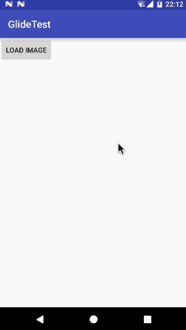

开始
Glide是一款由Bump Technologies开发的图片加载框架，使得我们可以在Android平台上以极度简单的方式加载和展示图片。
目前，Glide最新的稳定版本是3.7.0，虽然4.0已经推出RC版了，但是暂时问题还比较多。因此，我们这个系列的博客都会使用Glide 3.7.0版本来进行讲解，这个版本的Glide相当成熟和稳定。
要想使用Glide，首先需要将这个库引入到我们的项目当中。新建一个GlideTest项目，然后在app/build.gradle文件当中添加如下依赖：
dependencies {
compile 'com.github.bumptech.glide:glide:3.7.0'
}
如果你还在使用Eclipse，可以点击 这里 下载Glide的jar包。
另外，Glide中需要用到网络功能，因此你还得在AndroidManifest.xml中声明一下网络权限才行：
<uses-permission android:name="android.permission.INTERNET" />
就是这么简单，然后我们就可以自由地使用Glide中的任意功能了。
加载图片
现在我们就来尝试一下如何使用Glide来加载图片吧。比如这是必应上一张首页美图的地址：
http://cn.bing.com/az/hprichbg/rb/Dongdaemun_ZH-CN10736487148_1920x1080.jpg
然后我们想要在程序当中去加载这张图片。
那么首先打开项目的布局文件，在布局当中加入一个Button和一个ImageView，如下所示：
<?xml version="1.0" encoding="utf-8"?>
<LinearLayout xmlns:android="http://schemas.android.com/apk/res/android"
android:layout_width="match_parent"
android:layout_height="match_parent"
android:orientation="vertical">
<Button
android:layout_width="wrap_content"
android:layout_height="wrap_content"
android:text="Load Image"
android:onClick="loadImage"
/>
<ImageView
android:id="@+id/image_view"
android:layout_width="match_parent"
android:layout_height="match_parent" />
</LinearLayout>
为了让用户点击Button的时候能够将刚才的图片显示在ImageView上，我们需要修改MainActivity中的代码，如下所示：
public class MainActivity extends AppCompatActivity {
ImageView imageView;
@Override
protected void onCreate(Bundle savedInstanceState) {
super.onCreate(savedInstanceState);
setContentView(R.layout.activity_main);
imageView = (ImageView) findViewById(R.id.image_view);
}
public void loadImage(View view) {
String url = "http://cn.bing.com/az/hprichbg/rb/Dongdaemun_ZH-CN10736487148_1920x1080.jpg";
Glide.with(this).load(url).into(imageView);
}
}
没错，就是这么简单。现在我们来运行一下程序，效果如下图所示：
可以看到，一张网络上的图片已经被成功下载，并且展示到ImageView上了。
而我们到底做了什么？实际上核心的代码就只有这一行而已：
Glide.with(this).load(url).into(imageView);
千万不要小看这一行代码，实际上仅仅就这一行代码，你已经可以做非常非常多的事情了，包括加载网络上的图片、加载手机本地的图片、加载应用资源中的图片等等。
下面我们就来详细解析一下这行代码。
首先，调用Glide.with()方法用于创建一个加载图片的实例。with()方法可以接收Context、Activity或者Fragment类型的参数。也就是说我们选择的范围非常广，不管是在Activity还是Fragment中调用with()方法，都可以直接传this。那如果调用的地方既不在Activity中也不在Fragment中呢？也没关系，我们可以获取当前应用程序的ApplicationContext，传入到with()方法当中。注意with()方法中传入的实例会决定Glide加载图片的生命周期，如果传入的是Activity或者Fragment的实例，那么当这个Activity或Fragment被销毁的时候，图片加载也会停止。如果传入的是ApplicationContext，那么只有当应用程序被杀掉的时候，图片加载才会停止。
接下来看一下load()方法，这个方法用于指定待加载的图片资源。Glide支持加载各种各样的图片资源，包括网络图片、本地图片、应用资源、二进制流、Uri对象等等。因此load()方法也有很多个方法重载，除了我们刚才使用的加载一个字符串网址之外，你还可以这样使用load()方法：
// 加载本地图片
File file = new File(getExternalCacheDir() + "/image.jpg");
Glide.with(this).load(file).into(imageView);
// 加载应用资源
int resource = R.drawable.image;
Glide.with(this).load(resource).into(imageView);
// 加载二进制流
byte[] image = getImageBytes();
Glide.with(this).load(image).into(imageView);
// 加载Uri对象
Uri imageUri = getImageUri();
Glide.with(this).load(imageUri).into(imageView);
最后看一下into()方法，这个方法就很简单了，我们希望让图片显示在哪个ImageView上，把这个ImageView的实例传进去就可以了。当然，into()方法不仅仅是只能接收ImageView类型的参数，还支持很多更丰富的用法，不过那个属于高级技巧，我们会在后面的文章当中学习。
那么回顾一下Glide最基本的使用方式，其实就是关键的三步走：先with()，再load()，最后into()。熟记这三步，你就已经入门Glide了。
占位图
现在我们来学一些Glide的扩展内容。其实刚才所学的三步走就是Glide最核心的东西，而我们后面所要学习的所有东西都是在这个三步走的基础上不断进行扩展而已。
观察刚才加载网络图片的效果，你会发现，点击了Load Image按钮之后，要稍微等一会图片才会显示出来。这其实很容易理解，因为从网络上下载图片本来就是需要时间的。那么我们有没有办法再优化一下用户体验呢？当然可以，Glide提供了各种各样非常丰富的API支持，其中就包括了占位图功能。
顾名思义，占位图就是指在图片的加载过程中，我们先显示一张临时的图片，等图片加载出来了再替换成要加载的图片。
下面我们就来学习一下Glide占位图功能的使用方法，首先我事先准备好了一张loading.jpg图片，用来作为占位图显示。然后修改Glide加载部分的代码，如下所示：
Glide.with(this)
.load(url)
.placeholder(R.drawable.loading)
.into(imageView);
没错，就是这么简单。我们只是在刚才的三步走之间插入了一个placeholder()方法，然后将占位图片的资源id传入到这个方法中即可。另外，这个占位图的用法其实也演示了Glide当中绝大多数API的用法，其实就是在load()和into()方法之间串接任意想添加的功能就可以了。
不过如果你现在重新运行一下代码并点击Load Image，很可能是根本看不到占位图效果的。因为Glide有非常强大的缓存机制，我们刚才加载那张必应美图的时候Glide自动就已经将它缓存下来了，下次加载的时候将会直接从缓存中读取，不会再去网络下载了，因而加载的速度非常快，所以占位图可能根本来不及显示。
因此这里我们还需要稍微做一点修改，来让占位图能有机会显示出来，修改代码如下所示：
Glide.with(this)
.load(url)
.placeholder(R.drawable.loading)
.diskCacheStrategy(DiskCacheStrategy.NONE)
.into(imageView);
可以看到，这里串接了一个diskCacheStrategy()方法，并传入DiskCacheStrategy.NONE参数，这样就可以禁用掉Glide的缓存功能。
关于Glide缓存方面的内容我们将会在后面的文章进行详细的讲解，这里只是为了测试占位图功能而加的一个额外配置，暂时你只需要知道禁用缓存必须这么写就可以了。
现在重新运行一下代码，效果如下图所示：

可以看到，当点击Load Image按钮之后会立即显示一张占位图，然后等真正的图片加载完成之后会将占位图替换掉。
当然，这只是占位图的一种，除了这种加载占位图之外，还有一种异常占位图。异常占位图就是指，如果因为某些异常情况导致图片加载失败，比如说手机网络信号不好，这个时候就显示这张异常占位图。
异常占位图的用法相信你已经可以猜到了，首先准备一张error.jpg图片，然后修改Glide加载部分的代码，如下所示：
Glide.with(this)
.load(url)
.placeholder(R.drawable.loading)
.error(R.drawable.error)
.diskCacheStrategy(DiskCacheStrategy.NONE)
.into(imageView);
很简单，这里又串接了一个error()方法就可以指定异常占位图了。
现在你可以将图片的url地址修改成一个不存在的图片地址，或者干脆直接将手机的网络给关了，然后重新运行程序，效果如下图所示：
这样我们就把Glide提供的占位图功能都掌握了。
指定图片格式
我们还需要再了解一下Glide另外一个强大的功能，那就是Glide是支持加载GIF图片的。这一点确实非常牛逼，因为相比之下Jake Warton曾经明确表示过，Picasso是不会支持加载GIF图片的。
而使用Glide加载GIF图并不需要编写什么额外的代码，Glide内部会自动判断图片格式。比如这是一张GIF图片的URL地址：
http://p1.pstatp.com/large/166200019850062839d3
我们只需要将刚才那段加载图片代码中的URL地址替换成上面的地址就可以了，现在重新运行一下代码，效果如下图所示：
也就是说，不管我们传入的是一张普通图片，还是一张GIF图片，Glide都会自动进行判断，并且可以正确地把它解析并展示出来。
但是如果我想指定图片的格式该怎么办呢？就比如说，我希望加载的这张图必须是一张静态图片，我不需要Glide自动帮我判断它到底是静图还是GIF图。
想实现这个功能仍然非常简单，我们只需要再串接一个新的方法就可以了，如下所示：
Glide.with(this)
.load(url)
.asBitmap()
.placeholder(R.drawable.loading)
.error(R.drawable.error)
.diskCacheStrategy(DiskCacheStrategy.NONE)
.into(imageView);
可以看到，这里在load()方法的后面加入了一个asBitmap()方法，这个方法的意思就是说这里只允许加载静态图片，不需要Glide去帮我们自动进行图片格式的判断了。
现在重新运行一下程序，效果如下图所示：
由于调用了asBitmap()方法，现在GIF图就无法正常播放了，而是会在界面上显示第一帧的图片。
那么类似地，既然我们能强制指定加载静态图片，就也能强制指定加载动态图片。比如说我们想要实现必须加载动态图片的功能，就可以这样写：
Glide.with(this)
.load(url)
.asGif()
.placeholder(R.drawable.loading)
.error(R.drawable.error)
.diskCacheStrategy(DiskCacheStrategy.NONE)
.into(imageView);
这里调用了asGif()方法替代了asBitmap()方法，很好理解，相信不用我多做什么解释了。
那么既然指定了只允许加载动态图片，如果我们传入了一张静态图片的URL地址又会怎么样呢？试一下就知道了，将图片的URL地址改成刚才的必应美图，然后重新运行代码，效果如下图所示。
没错，如果指定了只能加载动态图片，而传入的图片却是一张静图的话，那么结果自然就只有加载失败喽。
指定图片大小
实际上，使用Glide在绝大多数情况下我们都是不需要指定图片大小的。
在学习本节内容之前，你可能还需要先了解一个概念，就是我们平时在加载图片的时候很容易会造成内存浪费。什么叫内存浪费呢？比如说一张图片的尺寸是10001000像素，但是我们界面上的ImageView可能只有200200像素，这个时候如果你不对图片进行任何压缩就直接读取到内存中，这就属于内存浪费了，因为程序中根本就用不到这么高像素的图片。
关于图片压缩这方面，我之前也翻译过Android官方的一篇文章，感兴趣的朋友可以去阅读一下 Android高效加载大图、多图解决方案，有效避免程序OOM 。
而使用Glide，我们就完全不用担心图片内存浪费，甚至是内存溢出的问题。因为Glide从来都不会直接将图片的完整尺寸全部加载到内存中，而是用多少加载多少。Glide会自动判断ImageView的大小，然后只将这么大的图片像素加载到内存当中，帮助我们节省内存开支。
当然，Glide也并没有使用什么神奇的魔法，它内部的实现原理其实就是上面那篇文章当中介绍的技术，因此掌握了最基本的实现原理，你也可以自己实现一套这样的图片压缩机制。
也正是因为Glide是如此的智能，所以刚才在开始的时候我就说了，在绝大多数情况下我们都是不需要指定图片大小的，因为Glide会自动根据ImageView的大小来决定图片的大小。
不过，如果你真的有这样的需求，必须给图片指定一个固定的大小，Glide仍然是支持这个功能的。修改Glide加载部分的代码，如下所示：
Glide.with(this)
.load(url)
.placeholder(R.drawable.loading)
.error(R.drawable.error)
.diskCacheStrategy(DiskCacheStrategy.NONE)
.override(100, 100)
.into(imageView);
仍然非常简单，这里使用override()方法指定了一个图片的尺寸，也就是说，Glide现在只会将图片加载成100*100像素的尺寸，而不会管你的ImageView的大小是多少了。
好了，今天是我们这个Glide系列的第一篇文章，写了这么多内容已经算是挺不错的了。现在你已经了解了Glide的基本用法，当然也是一些最常用的用法。下一篇文章当中，我们会尝试去分析Glide的源码，研究一下在这些基本用法的背后，Glide到底执行了什么神奇的操作，能够使得我们加载图片变得这么简单？感兴趣的朋友请继续阅读 Android图片加载框架最全解析（二），从源码的角度理解Glide的执行流程 。